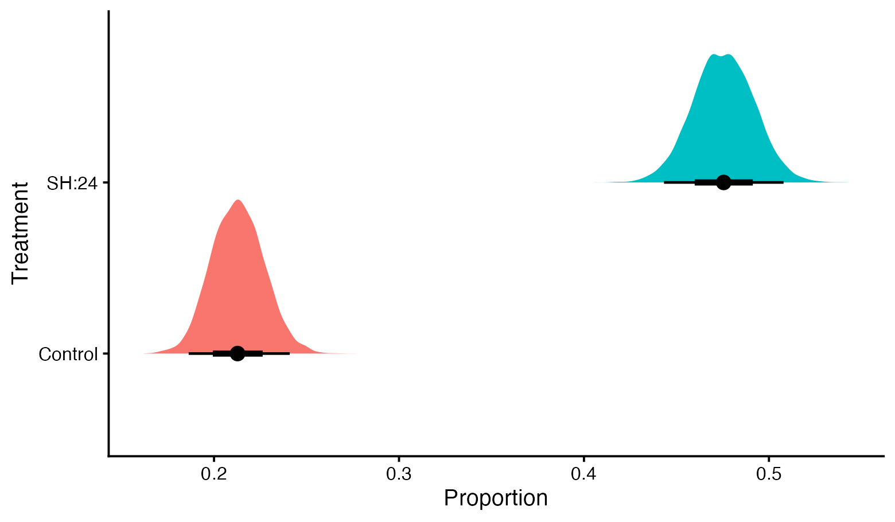
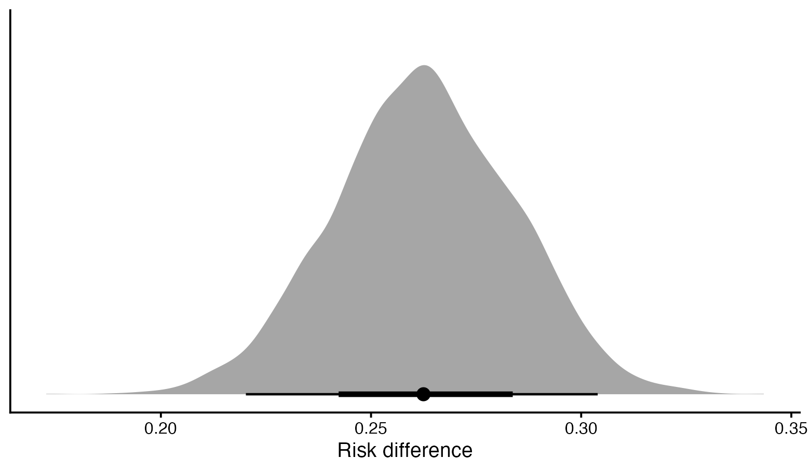
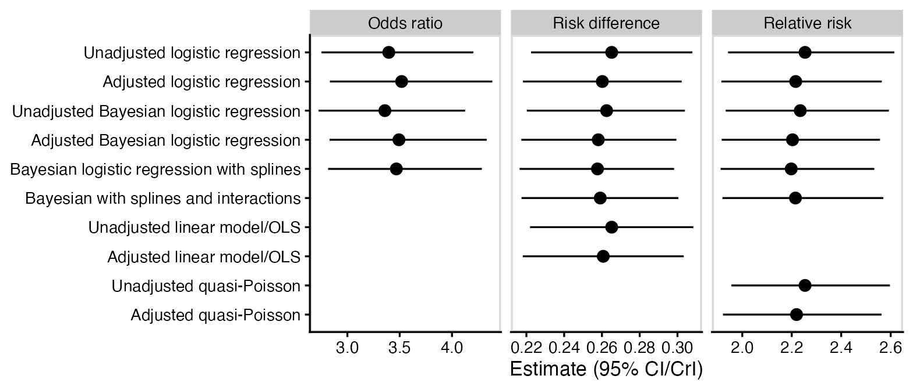
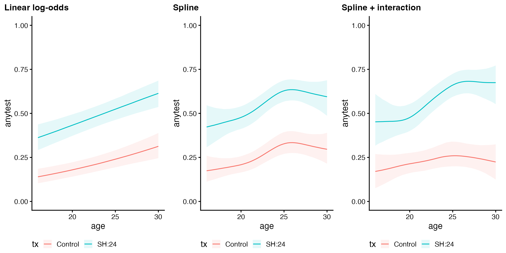
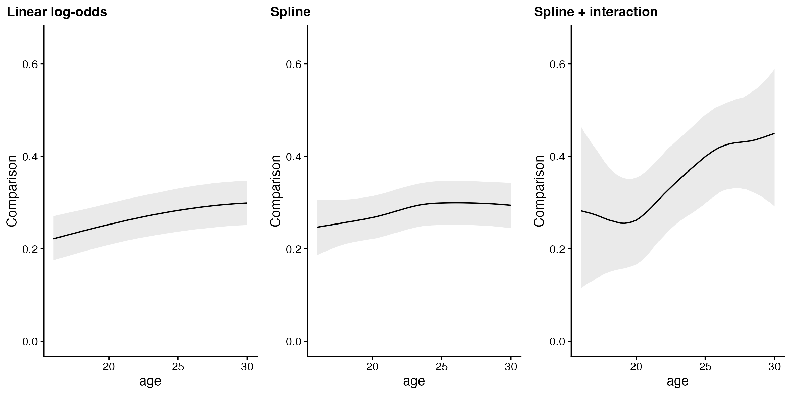
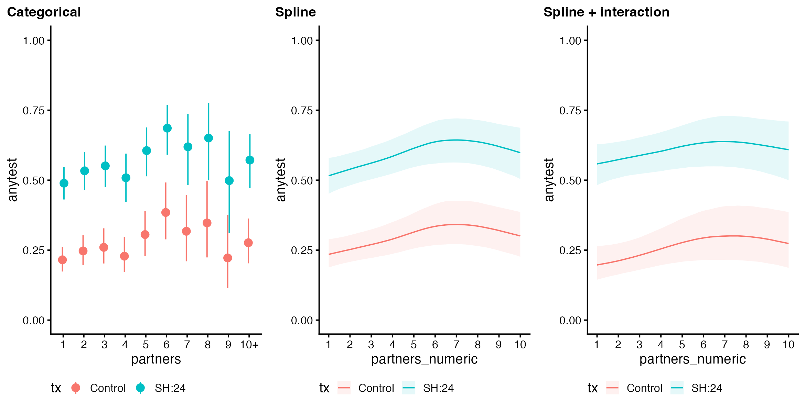
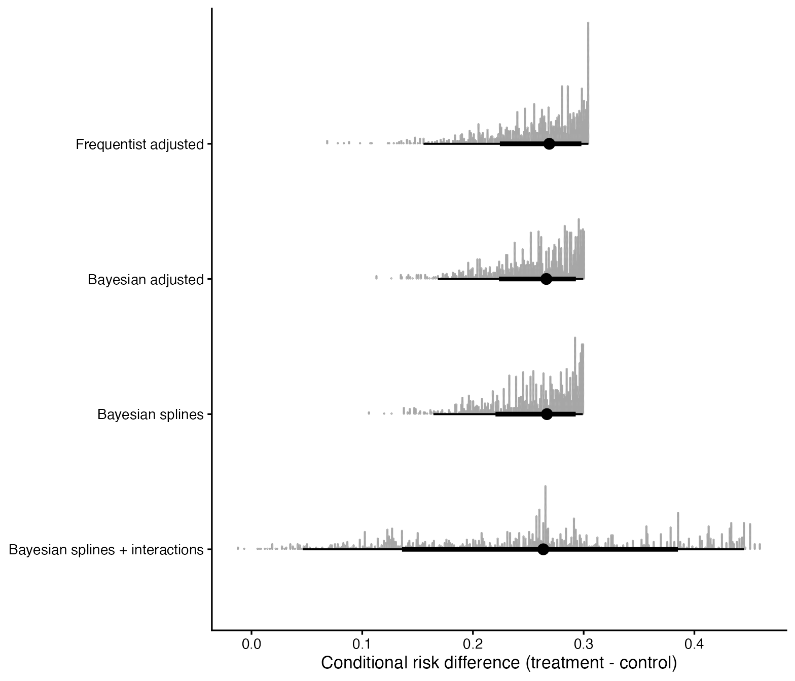

Code
library(tidyverse)
library(readxl)
library(cowplot)
library(gt)
library(gtsummary)
library(broom)
library(ggdist)
library(marginaleffects)Wherein I try to make sense of ongoing debates in the statistical community about how to analyse and report trials targeting binary outcomes, and then write some R code to practice what I hesitantly preach.
A lot of noise has been made about why an odds ratio may not be a desirable summary for a treatment effect on a binary variable1. There is that pesky problem that normal humans are unable to correctly interpret an odds ratio (Altman et al., 1998). In recent years, people2 have become more aware of the mathematical fact of noncollapsibility (Daniel et al., 2021; Greenland et al., 1999; Morris et al., 2022): the marginal3 odds ratio (population-level odds ratio) is not any kind of average of conditional odds ratios (individual-level odds ratios). The ICH E9(R1) estimand framework for clinical trials requires a “population-level summary”. In the language of causal inference, that’s describing an Average Treatment Effect (ATE), and the odds ratio isn’t one4.
Risk differences (the difference in probability attributable to a particular treatment) and relative risks (the ratio of probabilities due to a particular treatment) avoid these problems of odds ratios. However, statisticians are usually taught to analyse binary outcomes using logistic regression, the direct output5 of which is odds ratios. Someone on Stats Twitter rediscovers all of this every few months and starts a heated argument where nobody goes away happy.

Personally, I’m a fan of risk differences for communicating potential risks to an individual, ideally presented alongside the baseline level of risk. There’s some evidence that patients and clinicians find these measures easier to interpret than relative measures (Zipkin et al., 2014), especially when presented in the form of a natural frequency, like “6 in 1000 people” rather than “0.6%”.
Statistical analyses are often adjusted for covariates, either to reduce confounding (in observational studies) or improve power (in randomised trials). There are some technical challenges when doing this with risk differences and relative risks. Adjusting for covariates requires specifying some kind of model, and the natural mathematical form of covariate adjustment will depend on whether you are modelling log-odds (logistic regression model, corresponding to an odds ratio), probability (linear probability model, corresponding to risk difference) or log-probability (quasi-Poisson or log-link binomial model, corresponding to relative risk). When modelling risk differences or relative risks directly, it’s possible to end up with impossible predicted probabilities: “probabilities” which are less than zero or greater than one. Using logistic regression avoids this problem, because any real number on the log-odds scale translates to a probability between zero and one. Any odds ratio can be applied to any level of baseline risk without making mathematicians sad6.
There are also compelling — but not universally accepted — arguments that despite the difficulty in interpreting odds ratios, they are more likely to be transportable between different levels of baseline risk than risk differences or relative risks (Doi et al., 2022; Senn, 2011). This is another reason to prefer odds ratios for statistical modelling because it reduces the need for interaction terms, which can only be estimated well in large samples. In the context of clinical trials and other randomised experiments, logistic regression is able to produce correct adjusted estimates of the treatment effects even if the exact form of the covariate adjustment is misspecified — for example, if there are omitted interaction terms or nonlinear effects (White et al., 2021).
Thus we have a dilemma: people understand risk differences and (to a lesser extent) relative risks, but they can be problematic to estimate with covariate adjustment; nobody understands odds ratios7, but logistic regression is probably a better model, operating closer to a scale on which the underlying effects are additive. One way out is to model the data using logistic regression, and then use that model to produce other quantities of interest. This approach is described in Permutt (2020), which has some of the best writing I’ve encountered in a statistics paper — being written in the form of a dialogue between a randomiser (the “causal inference” perspective) and a parameteriser (the “statistical modelling” perspective) walking through the Garden of Eden, planning to conduct and analyse a clinical trial.
Permutt (2020) also considered what information different audiences might want from the results of a clinical trial: regulator, patient, and scientist. There’s a fourth audience which I think is worth considering, very briefly mentioned by Permutt: the meta-analyst, trying to aggregate information from multiple trials.
Permutt argues in favour of the ATE being the main quantity of regulatory interest:
The average treatment effect should be of regulatory interest, however. The primary analysis of outcome should be of a variable that is reasonably linear in utility to the patient. Then, if and only if the average effect is positive, the ensemble of patients can be said to be better off under the test condition than under the control. This is perhaps the weakest imaginable statistical condition for approval of a drug product, but it is surely a necessary condition.
Permutt notes that studies designed to be able to detect average treatment effects are unlikely to be adequate for patient-specific decision making or providing a more detailed scientific understanding.
The most clearly expressed counter-argument to this comes from a blog post by Frank Harrell arguing against single-number summaries for treatment effects on binary outcomes:
Marginal adjusted estimates may be robust, but may not accurately estimate RD for either any patient in the RCT or for the clinical population to which RCT results are to be applied, because in effect they assume that the RCT sample is a random sample from the clinical population, something not required and never realized for RCTs.
I am a coward and not (yet?) willing to take a strong position in this fight, but am always sympathetic to the idea that a single number is rarely sufficient to describe scientific evidence (see also: p-values). Harrell’s other writing on this topic is also worth reading:
One issue which I remain unclear about is whether randomised trials powered to detect main treatment effects are likely to reasonably estimate patient-specific baseline risk — a simpler task than patient-specific treatment effects, but still outside of the usual design remit for an efficacy trial. Common analytical approaches for clinical trials have good properties for estimating average treatment effects when the covariates are regarded as nuisance parameters, but are not guaranteed to perform so well if the effects of the covariates are themselves of interest.
Finally, there is the meta-analytic perspective to consider. An effect size which is less heterogeneous between studies is once again desirable. If arguments about the transportability of odds ratios by the Harrell, Senn, Doi, and others are to be believed, we should report odds ratios, as those are likely to be the most useful for meta-analysts. There is some merit in reporting all commonly-used effect size measures: risk difference, relative risk, and odds ratio. This provides the most flexibility for future meta-analysts.
If all of that was a bit much to take in, maybe this will help:

In the rest of this post I’ll show how to calculate risk differences and relative risks from logistic regression models using R and the marginaleffects package, using an example in which it makes no meaningful difference which method you use (oops?).
For this post, I’m going to look at the same trial Solomon Kurz re-analysed in his blog post about causal inference with logistic regression: Wilson et al. (2017), a randomised trial comparing an internet-accessed sexually transmitted infection (STI) testing service to a clinic-based service. The methods I use will be similar to Solomon Kurz’s post, but the emphasis and details will be different.
The original trial has some nice features. For example, the randomisation method balanced gender, age, number of sexual partners and sexual orientation between the two study arms. This means that we should expect very little difference in the point estimate from covariate adjustment.
The original analysis used multiple imputation, a sophisticated approach for dealing with missing outcome data. For this blog post I will do a complete case analysis, excluding participants who didn’t have outcome data from the analysis. The only covariate with missing data was sexual orientation. Following the original analysis, I will treat ‘missing’ as an explicit category for sexual orientation.
The trial measured several outcomes, but this post will only consider one of the co-primary outcomes: completion of an STI test at 6 weeks. An increase in this outcome would be considered favourable. The original paper reported the treatment effect as a relative risk with associated 95% confidence interval.
We’re going to use a bunch of R packages in the code that follows: tidyverse for general data wrangling, readxl to read Excel files, cowplot to get a nicer theme for plots, gt and gtsummary to make tables, broom to extract coefficient estimates, ggdist for plotting distributions, and most importantly marginaleffects to obtain the estimates of risk difference and relative risk.
library(tidyverse)
library(readxl)
library(cowplot)
library(gt)
library(gtsummary)
library(broom)
library(ggdist)
library(marginaleffects)Set up a default plot theme:
theme_set(
theme_cowplot(font_size = 11, rel_small = 9/11,
rel_tiny = 8/11, rel_large = 1) +
theme(plot.title.position = "plot")
)The original data file was an Excel spreadsheet which can be downloaded from the journal article as electronic supplementary material. Note that I name data frames that I read in from a file with the suffix _orig, to distinguish them from cleaned or modified versions. This helps with interactive data cleaning, because I always have a copy of the original data on hand in R’s memory.
wilson2017_orig <- read_xls("pmed.1002479.s001.xls", sheet = "data")This spreadsheet was already set up nicely for analysis, so only mild data cleaning is required. I created a new variable tx to store the treatment group, because the variable name group causes problems for the marginaleffects package, and explicitly ensure that “Control” is the reference category. The other level of the treatment factor is SH:24, the name of new intervention being trialled. I converted the other categorical variables into factors, sorted in sensible ways: gender, sexual orientation (msm) and ethnic group from most to least frequent category; number of partners in ascending numeric order. The msm variable had a category of “not known” stored as the number 99. This could be treated as a missing value, but I have chosen to analyse it as a distinct category.
The partners variable was censored at 10 partners in the original data (i.e., instead of “10”, “11”, etc there is “10+”) and treated as a categorical variable for analysis purposes. For secret reasons, I have also created a numeric version of this variable (partners_numeric).
wilson2017 <- wilson2017_orig %>%
mutate(
tx = fct_relevel(group, "Control", "SH:24"),
gender = fct_infreq(gender),
partners_numeric = partners %>%
str_replace(r"(\+$)", "") %>%
as.numeric(),
partners = fct_inseq(partners),
msm = msm %>%
fct_recode("not known" = "99") %>%
fct_infreq(),
ethnicgrp = fct_infreq(ethnicgrp)
)A summary table showing demographics and the outcome variable is shown below, produced using the gtsummary package. You can see that there is almost perfect balance in all variables except for ethnic group. The outcome (anytest) is more likely to be missing in the control group.
tbl_summary(
wilson2017,
include = c(age, gender, msm, ethnicgrp, partners, anytest),
by = tx
) %>%
add_overall()| Characteristic | Overall, N = 2,0631 | Control, N = 1,0321 | SH:24, N = 1,0311 |
|---|---|---|---|
| age | 23.0 (20.0, 26.0) | 23.0 (20.0, 26.0) | 23.0 (20.0, 26.0) |
| gender | |||
| Female | 1,213 (59%) | 609 (59%) | 604 (59%) |
| Male | 846 (41%) | 422 (41%) | 424 (41%) |
| Transgender | 4 (0.2%) | 1 (<0.1%) | 3 (0.3%) |
| msm | |||
| other | 1,778 (86%) | 888 (86%) | 890 (86%) |
| msm | 262 (13%) | 133 (13%) | 129 (13%) |
| not known | 23 (1.1%) | 11 (1.1%) | 12 (1.2%) |
| ethnicgrp | |||
| White/ White British | 1,528 (74%) | 749 (73%) | 779 (76%) |
| Black/ Black British | 191 (9.3%) | 110 (11%) | 81 (7.9%) |
| Mixed/ Multiple ethnicity | 188 (9.1%) | 99 (9.6%) | 89 (8.6%) |
| Asian/ Asian British | 127 (6.2%) | 57 (5.5%) | 70 (6.8%) |
| Other | 29 (1.4%) | 17 (1.6%) | 12 (1.2%) |
| partners | |||
| 1 | 606 (29%) | 304 (29%) | 302 (29%) |
| 2 | 365 (18%) | 187 (18%) | 178 (17%) |
| 3 | 285 (14%) | 132 (13%) | 153 (15%) |
| 4 | 215 (10%) | 104 (10%) | 111 (11%) |
| 5 | 176 (8.5%) | 91 (8.8%) | 85 (8.2%) |
| 6 | 113 (5.5%) | 53 (5.1%) | 60 (5.8%) |
| 7 | 60 (2.9%) | 33 (3.2%) | 27 (2.6%) |
| 8 | 40 (1.9%) | 19 (1.8%) | 21 (2.0%) |
| 9 | 22 (1.1%) | 12 (1.2%) | 10 (1.0%) |
| 10+ | 181 (8.8%) | 97 (9.4%) | 84 (8.1%) |
| anytest | 612 (35%) | 173 (21%) | 439 (48%) |
| Unknown | 324 | 214 | 110 |
| 1 Median (IQR); n (%) | |||
Let’s begin by doing some logistic regressions and getting some odds ratios. We’ll start with an unadjusted model, where the outcome anytest only has one predictor: tx, the assigned treatment.
lrm_anytest_unadj <- glm(
anytest ~ tx,
family = binomial,
data = wilson2017
)We can obtain an unadjusted (or “crude”) odds ratio for the treatment effect by exponentiating the model parameter for tx. The tidy() function does this, returning the results in an R data frame. The second row of the table (txSH:24) tells us what we want: the odds ratio (estimate) is 3.40, with a 95% confidence interval of 2.75 to 4.20 (the conf.low and conf.high columns).
tidy(lrm_anytest_unadj, conf.int = TRUE, exponentiate = TRUE)# A tibble: 2 × 7
term estimate std.error statistic p.value conf.low conf.high
<chr> <dbl> <dbl> <dbl> <dbl> <dbl> <dbl>
1 (Intercept) 0.268 0.0856 -15.4 2.61e-53 0.226 0.316
2 txSH:24 3.40 0.108 11.3 1.17e-29 2.75 4.20 Adding covariates to the model usually increases statistical power, even in a clinical trial where the unadjusted model still gives “correct” (unbiased) results. In the case of an ANCOVA for a continuous variable, the increase in power comes from decreased residual variance and hence decreased standard errors, but in logistic regression there is no residual variance to decrease. The only way for the increase in power to manifest itself is from an increase in the estimated effect size (odds ratios).
Let’s add age, gender, orientation, ethnic group and number of partners to our model. Age will be modelled as a continuous variable, the rest as categorical; R figures this out based on the column types, which aren’t shown here.
lrm_anytest_adj <- glm(
anytest ~ tx + age + gender + msm + ethnicgrp + partners,
family = binomial,
data = wilson2017
)This model has a lot of parameters, but the only one of interest right now is the treatment effect. The adjusted odds ratio is only slightly different from the unadjusted odds ratio (3.52 vs 3.40), and there has been barely any change to the power of the test (z-statistic is 11.3, same as before).
tidy(lrm_anytest_adj, conf.int = TRUE, exponentiate = TRUE) %>%
filter(term == "txSH:24")# A tibble: 1 × 7
term estimate std.error statistic p.value conf.low conf.high
<chr> <dbl> <dbl> <dbl> <dbl> <dbl> <dbl>
1 txSH:24 3.52 0.111 11.3 1.46e-29 2.83 4.39The marginaleffects package makes it easy to calculate the risk difference and other summary measures from a logistic regression model.
We can get the estimated proportion of participants completing an STI test in each treatment group using the avg_predictions() function. This function provides its outcome in the response scale (i.e. probability, not log-odds) by default. The new treatment increased proportion of participants completing an STI test from 21% (95% CI: 18%, 24%) to 48% (95% CI: 44%, 51%).
avg_predictions(lrm_anytest_unadj, variables = "tx")
tx Estimate Pr(>|z|) S 2.5 % 97.5 %
SH:24 0.477 0.157 2.7 0.445 0.509
Control 0.211 <0.001 174.7 0.185 0.241
Columns: tx, estimate, p.value, s.value, conf.low, conf.high The results are almost identical in the adjusted model.
avg_predictions(lrm_anytest_adj, variables = "tx")
tx Estimate Pr(>|z|) S 2.5 % 97.5 %
SH:24 0.472 0.103 3.3 0.439 0.506
Control 0.203 <0.001 177.4 0.176 0.232
Columns: tx, estimate, p.value, s.value, conf.low, conf.high The avg_comparisons() function gives us comparisons between treatment groups. Once again, we get comparisons on the response scale (i.e. risk differences) by default. The new treatment increased the proportion of participants completing an STI test by 26% (95% CI: 22%, 31%).
avg_comparisons(lrm_anytest_unadj, variables = "tx")
Term Contrast Estimate Std. Error z Pr(>|z|) S 2.5 % 97.5 %
tx SH:24 - Control 0.265 0.0218 12.2 <0.001 110.8 0.222 0.308
Columns: term, contrast, estimate, std.error, statistic, p.value, s.value, conf.low, conf.high The results from the adjusted model are very similar.
avg_comparisons(lrm_anytest_adj, variables = "tx")
Term Contrast Estimate Std. Error z Pr(>|z|) S 2.5 % 97.5 %
tx SH:24 - Control 0.26 0.0214 12.1 <0.001 110.2 0.218 0.302
Columns: term, contrast, estimate, std.error, statistic, p.value, s.value, conf.low, conf.high To get relative risks using avg_comparisons(), we need to ask for the average of the log of the ratio between treatment conditions (lnratioavg in the code below), and then exponentiate that. This provides an estimated relative risk of 2.25 (95% CI: 1.94, 2.61).
avg_comparisons(lrm_anytest_unadj, variables = "tx",
comparison = "lnratioavg", transform = "exp")
Term Contrast Estimate Pr(>|z|) S 2.5 % 97.5 %
tx ln(mean(SH:24) / mean(Control)) 2.25 <0.001 86.6 1.94 2.61
Columns: term, contrast, estimate, p.value, s.value, conf.low, conf.high, predicted, predicted_hi, predicted_lo And again, the results not meaningfully different using the adjusted model.
avg_comparisons(lrm_anytest_adj, variables = "tx",
comparison = "lnratioavg", transform = "exp")
Term Contrast Estimate Pr(>|z|) S 2.5 % 97.5 %
tx ln(mean(SH:24) / mean(Control)) 2.22 <0.001 86.4 1.92 2.56
Columns: term, contrast, estimate, p.value, s.value, conf.low, conf.high, predicted, predicted_hi, predicted_lo A linear probability model is just a fancy term for fitting a linear regression to a binary outcome. In the unadjusted case, where there are no additional variables, this is equivalent to doing a t-test. It is common to use heteroscedasticity-robust standard errors when fitting a linear probability model, but this is not necessary in the case of a clinical trial with equal numbers in each treatment arm.
ols_anytest_unadj <- lm(
anytest ~ tx,
data = wilson2017
)The coefficient for tx in the linear model is the risk difference and the intercept is the average baseline risk. These are the same as the values calculated from the logistic regression.
tidy(ols_anytest_unadj, conf.int = TRUE)# A tibble: 2 × 7
term estimate std.error statistic p.value conf.low conf.high
<chr> <dbl> <dbl> <dbl> <dbl> <dbl> <dbl>
1 (Intercept) 0.211 0.0161 13.2 7.53e-38 0.180 0.243
2 txSH:24 0.265 0.0221 12.0 4.96e-32 0.222 0.308Using avg_comparisons() is possible for the linear model, too, and gives the same results:
avg_comparisons(ols_anytest_unadj, variables = "tx")
Term Contrast Estimate Std. Error z Pr(>|z|) S 2.5 % 97.5 %
tx SH:24 - Control 0.265 0.0221 12 <0.001 108.2 0.222 0.308
Columns: term, contrast, estimate, std.error, statistic, p.value, s.value, conf.low, conf.high We can also fit an adjusted model, where we assume a constant risk difference against different levels of baseline risk depending on levels of the covariates. This approach is statistically valid, in the same of being robust to misspecification of the covariate adjustment model, for the same reason that ANCOVA is generally a valid way to analyse a clinical trial. The adjusted estimate is very slightly different from the adjusted estimated obtained from logistic regression, but not meaningfully so: the two methods are not mathematically identical but both are reasonable ways to try to estimate the same quantity.
ols_anytest_adj <- lm(
anytest ~ tx + age + gender + msm + ethnicgrp + partners,
data = wilson2017
)Once again the coefficient for tx is directly interpretable as a risk difference:
tidy(ols_anytest_adj, conf.int = TRUE) %>%
filter(term == "txSH:24")# A tibble: 1 × 7
term estimate std.error statistic p.value conf.low conf.high
<chr> <dbl> <dbl> <dbl> <dbl> <dbl> <dbl>
1 txSH:24 0.261 0.0217 12.0 6.97e-32 0.218 0.303The output from avg_comparisons() is the same as the coefficient in this case:
avg_comparisons(ols_anytest_adj, variables = "tx")
Term Contrast Estimate Std. Error z Pr(>|z|) S 2.5 % 97.5 %
tx SH:24 - Control 0.261 0.0217 12 <0.001 107.7 0.218 0.303
Columns: term, contrast, estimate, std.error, statistic, p.value, s.value, conf.low, conf.high Relative risks are often estimated directly using Poisson regression models with robust standard errors. In this example I’ve used a quasi-likelihood model as a way of providing the robust standard errors, mainly for simplicity because it’s built into base R.
qp_anytest_unadj <- glm(
anytest ~ tx,
family = quasipoisson,
data = wilson2017
)The exponentiated tx coefficient provides the relative risk estimate: 2.25 (95% CI: 1.96, 2.60).
tidy(qp_anytest_unadj, conf.int = TRUE, exponentiate = TRUE)# A tibble: 2 × 7
term estimate std.error statistic p.value conf.low conf.high
<chr> <dbl> <dbl> <dbl> <dbl> <dbl> <dbl>
1 (Intercept) 0.211 0.0612 -25.4 4.77e-121 0.187 0.238
2 txSH:24 2.25 0.0723 11.2 2.44e- 28 1.96 2.60 This exponentiated coefficient is exactly the same as the output from avg_comparisons(), as we’d hope.
avg_comparisons(qp_anytest_unadj, variables = "tx",
comparison = "lnratioavg", transform = "exp")
Term Contrast Estimate Pr(>|z|) S 2.5 % 97.5 %
tx ln(mean(SH:24) / mean(Control)) 2.25 <0.001 94.9 1.96 2.6
Columns: term, contrast, estimate, p.value, s.value, conf.low, conf.high, predicted, predicted_hi, predicted_lo It’s also possible to include covariates in this kind of model, as with others.
qp_anytest_adj <- glm(
anytest ~ tx + age + gender + msm + ethnicgrp + partners,
family = quasipoisson,
data = wilson2017
)In this case the adjusted relative risk (2.22; 95% CI: 1.92, 2.57) is almost identical to the one derived previously from the logistic regression model (2.22; 95% CI: 1.92, 2.56).
tidy(qp_anytest_adj, conf.int = TRUE, exponentiate = TRUE) %>%
filter(term == "txSH:24")# A tibble: 1 × 7
term estimate std.error statistic p.value conf.low conf.high
<chr> <dbl> <dbl> <dbl> <dbl> <dbl> <dbl>
1 txSH:24 2.22 0.0734 10.9 1.28e-26 1.92 2.57And once again, avg_comparisons() provides exactly the same estimate and confidence interval as the exponentiated model coefficient.
avg_comparisons(qp_anytest_adj, variables = "tx",
comparison = "lnratioavg", transform = "exp")
Term Contrast Estimate Pr(>|z|) S 2.5 % 97.5 %
tx ln(mean(SH:24) / mean(Control)) 2.22 <0.001 88.9 1.92 2.56
Columns: term, contrast, estimate, p.value, s.value, conf.low, conf.high, predicted, predicted_hi, predicted_lo While we’re trying out lots of different models, why not look at a Bayesian approach to logistic regression? To do this we’re going to need a couple more R packages: brms for fitting Bayesian regression models with Stan and bayestestR for setting up contrasts for categorical variables where equal priors have a sensible interpretation.
library(brms)
library(bayestestR)I created a copy of the data, named wilson2017_bayes, and set up all of the categorical variables to use contr.equalprior_deviations for contrasts. Under this parameterisation, a one unit difference represents the average difference between a group mean and the grand mean. For example, a factor with two levels would be encoded as a dummy variable taking the values -1 and 1.
wilson2017_bayes <- wilson2017
contrasts(wilson2017_bayes$tx) <- "contr.equalprior_deviations"
contrasts(wilson2017_bayes$gender) <- "contr.equalprior_deviations"
contrasts(wilson2017_bayes$msm) <- "contr.equalprior_deviations"
contrasts(wilson2017_bayes$ethnicgrp) <- "contr.equalprior_deviations"
contrasts(wilson2017_bayes$partners) <- "contr.equalprior_deviations"The code below fits the unadjusted model using brms. It’s a little bit more complicated than before, partly due to the extra code that saves the model object to a file and preferentially loads that file if it exists. There are a few other extra things to consider in the Bayesian model:
family = bernoulli instead of family = binomial when the outcome is the result of a single trial uses optimised code which fits the model a lot faster.brms default is a fairly diffuse Student t distribution which should be fine here.brms uses half of the iterations for warmup, so we will end up with a total of 10,000 draws from the posterior distribution (four times 2,500).if (!file.exists("brm_anytest_unadj.Rds")) {
brm_anytest_unadj <- brm(
anytest ~ tx,
family = bernoulli,
prior = prior(normal(0, 0.5), class = b),
data = wilson2017_bayes,
backend = "cmdstanr",
cores = 4,
chains = 4,
iter = 5000,
seed = 12345
)
saveRDS(brm_anytest_unadj, "brm_anytest_unadj.Rds")
} else {
brm_anytest_unadj <- readRDS("brm_anytest_unadj.Rds")
}All of the marginaleffects functions we’ve seen before work for this model too. We can also directly access the posterior distribution of quantities we’re interested in. For example, the posterior distributions of the marginal means for each treatment are shown below.
avg_predictions(brm_anytest_unadj, variables = "tx") %>%
posterior_draws() %>%
ggplot(aes(draw, y = tx, fill = tx)) +
stat_halfeye() +
theme(legend.position = "off") +
labs(y = "Treatment", x = "Proportion")
We can access the posterior distribution of the average treatment effect in a similar way:
avg_comparisons(brm_anytest_unadj, variables = "tx") %>%
posterior_draws() %>%
ggplot(aes(draw)) +
stat_halfeye() +
scale_y_continuous(breaks = NULL) +
labs(y = NULL, x = "Risk difference")
We can add covariates to this model in the same way as we did for the frequentist model. This model will be examined in more detail in the section “Treatment effects as a function of covariates”.
if (!file.exists("brm_anytest_adj.Rds")) {
brm_anytest_adj <- brm(
anytest ~ tx + age + gender + msm + ethnicgrp + partners,
family = bernoulli,
prior = prior(normal(0, 0.5), class = b),
data = wilson2017_bayes,
backend = "cmdstanr",
cores = 4,
chains = 4,
iter = 5000,
seed = 54321
)
saveRDS(brm_anytest_adj, "brm_anytest_adj.Rds")
} else {
brm_anytest_adj <- readRDS("brm_anytest_adj.Rds")
}I can now reveal why I created a partners_numeric variable earlier, for previously-secret reasons. Until now, we’ve modelled the effect of age using a straight line on the log-odds scale, and number of partners using a separate category for each number (1 through “10+”). We can make the model for age more flexible and the model for number of partners more plausible by fitting a penalised spline instead. This is known as a Generalised Additive Model (GAM), and doesn’t have to be Bayesian, but in this case it is also Bayesian. Using brms, it can be as simple as specifying e.g. s(age) to fit a smooth curve relationship between age at the outcome. The wiggliness of the curve will be automatically adjusted based on the data. It’s like magic, but made out of fancy maths.
Since this is a Bayesian model, we should also specify a prior for the smoothing term. This takes the form of a prior on the standard deviation of the smoothing parameters, since penalised splines and random effects are the same thing. I’m not really sure what I’m doing here — and haven’t seen anything written about choosing priors for smooths — but have specified a Normal(0, 1.5) prior.
if (!file.exists("brm_anytest_gam.Rds")) {
brm_anytest_gam <- brm(
anytest ~ tx + s(age) + gender + msm + ethnicgrp + s(partners_numeric),
family = bernoulli,
prior = c(prior(normal(0, 0.5), class = b),
prior(normal(0, 1.5), class = sds)),
data = wilson2017_bayes,
backend = "cmdstanr",
cores = 4,
chains = 4,
iter = 5000,
seed = 11117
)
saveRDS(brm_anytest_gam, "brm_anytest_gam.Rds")
} else {
brm_anytest_gam <- readRDS("brm_anytest_gam.Rds")
}Plots comparing these smooth curves for age and number of partners to the original linear terms are shown later, in the “Treatment effects as a function of covariates” section.
Finally, I have fit a model including interaction terms, allowing the covariate effects to vary between the treatment and control groups. I’ve placed tighter priors on the interaction terms, Normal(0, 0.25) instead of Normal(0, 0.5), reflecting the idea that I am fairly certain the odds ratios involved in interactions should be less than \(e \approx 2.7\).
if (!file.exists("brm_anytest_gam_intxn.Rds")) {
brm_anytest_gam_intxn <- brm(
anytest ~ tx + s(age, by = tx) + tx*gender + tx*msm +
tx*ethnicgrp + s(partners_numeric, by = tx),
family = bernoulli,
prior = c(
prior(normal(0, 0.5), class = b),
prior(normal(0, 0.25), class = b, coef = "tx1:gender1"),
prior(normal(0, 0.25), class = b, coef = "tx1:gender2"),
prior(normal(0, 0.25), class = b, coef = "tx1:msm1"),
prior(normal(0, 0.25), class = b, coef = "tx1:msm2"),
prior(normal(0, 0.25), class = b, coef = "tx1:ethnicgrp1"),
prior(normal(0, 0.25), class = b, coef = "tx1:ethnicgrp2"),
prior(normal(0, 0.25), class = b, coef = "tx1:ethnicgrp3"),
prior(normal(0, 0.25), class = b, coef = "tx1:ethnicgrp4"),
prior(normal(0, 1.5), class = sds)
),
data = wilson2017_bayes,
backend = "cmdstanr",
cores = 4,
chains = 4,
iter = 5000,
seed = 11113
)
saveRDS(brm_anytest_gam_intxn, "brm_anytest_gam_intxn.Rds")
} else {
brm_anytest_gam_intxn <- readRDS("brm_anytest_gam_intxn.Rds")
}We’ll examine the effect of these interaction terms in the “Treatment effects as a function of covariates” and “Distribution of treatment effects” sections.
Putting the code above together, we can make a big data frame containing all of our effect size estimates. Click the “Code” button below if you want to see exactly how the sausage is made, or keep reading to see a plot.
# obtain an odds ratio from a brms coefficient estimate
get_brms_or <- function(model, term, scale = 1, exponentiate = TRUE) {
fixef(model)[term, , drop = FALSE] %>%
as.data.frame() %>%
select(estimate = Estimate, conf.low = Q2.5, conf.high = Q97.5) %>%
mutate(across(everything(), \(x) exp(x * scale)))
}
# odds ratio estimates
anytest_or_estimates <- bind_rows(
"Unadjusted logistic regression" =
tidy(lrm_anytest_unadj, conf.int = TRUE, exponentiate = TRUE) %>%
filter(term == "txSH:24"),
"Adjusted logistic regression" =
tidy(lrm_anytest_adj, conf.int = TRUE, exponentiate = TRUE) %>%
filter(term == "txSH:24"),
"Unadjusted Bayesian logistic regression" =
get_brms_or(brm_anytest_unadj, "tx1", scale = 2),
"Adjusted Bayesian logistic regression" =
get_brms_or(brm_anytest_adj, "tx1", scale = 2),
"Bayesian logistic regression with splines" =
get_brms_or(brm_anytest_gam, "tx1", scale = 2),
.id = "model"
) %>%
select(model, estimate, conf.low, conf.high)
# risk difference estimates
anytest_rd_estimates <- bind_rows(
"Unadjusted logistic regression" =
avg_comparisons(lrm_anytest_unadj, variables = "tx"),
"Adjusted logistic regression" =
avg_comparisons(lrm_anytest_adj, variables = "tx"),
"Unadjusted Bayesian logistic regression" =
avg_comparisons(brm_anytest_unadj, variables = "tx"),
"Adjusted Bayesian logistic regression" =
avg_comparisons(brm_anytest_adj, variables = "tx"),
"Bayesian logistic regression with splines" =
avg_comparisons(brm_anytest_gam, variables = "tx"),
"Bayesian with splines and interactions" =
avg_comparisons(brm_anytest_gam_intxn, variables = "tx"),
"Unadjusted linear model/OLS" =
avg_comparisons(ols_anytest_unadj, variables = "tx"),
"Adjusted linear model/OLS" =
avg_comparisons(ols_anytest_adj, variables = "tx"),
.id = "model"
) %>%
select(model, estimate, conf.low, conf.high)
# relative risk estimates
anytest_rr_estimates <- bind_rows(
"Unadjusted logistic regression" =
avg_comparisons(lrm_anytest_unadj, variables = "tx",
comparison = "lnratioavg", transform = "exp"),
"Adjusted logistic regression" =
avg_comparisons(lrm_anytest_adj, variables = "tx",
comparison = "lnratioavg", transform = "exp"),
"Unadjusted Bayesian logistic regression" =
avg_comparisons(brm_anytest_unadj, variables = "tx",
comparison = "lnratioavg", transform = "exp"),
"Adjusted Bayesian logistic regression" =
avg_comparisons(brm_anytest_adj, variables = "tx",
comparison = "lnratioavg", transform = "exp"),
"Bayesian logistic regression with splines" =
avg_comparisons(brm_anytest_gam, variables = "tx",
comparison = "lnratioavg", transform = "exp"),
"Bayesian with splines and interactions" =
avg_comparisons(brm_anytest_gam_intxn, variables = "tx",
comparison = "lnratioavg", transform = "exp"),
"Unadjusted quasi-Poisson" =
avg_comparisons(qp_anytest_unadj, variables = "tx",
comparison = "lnratioavg", transform = "exp"),
"Adjusted quasi-Poisson" =
avg_comparisons(qp_anytest_adj, variables = "tx",
comparison = "lnratioavg", transform = "exp"),
.id = "model"
) %>%
select(model, estimate, conf.low, conf.high)
anytest_all_estimates <- bind_rows(
"Odds ratio" = anytest_or_estimates,
"Risk difference" = anytest_rd_estimates,
"Relative risk" = anytest_rr_estimates,
.id = "estimand"
)Plotting all of the estimates shows that if all you’re after is a risk difference or relative risk, there’s very little difference between methods, at least for this particular study. Part of the reason for this is that the intervention effect was much greater effect than differences in baseline risk between levels of covariates. I would not expect this observation to generalise: in other scenarios you may find a larger difference between adjusted and unadjusted methods, although the differences between methods for adjustment are still likely to be minor.
anytest_all_estimates %>%
mutate(model = fct_inorder(model), estimand = fct_inorder(estimand)) %>%
ggplot(aes(x = estimate, xmin = conf.low, xmax = conf.high,
y = model)) +
geom_pointrange() +
scale_y_discrete(limits = rev) +
facet_wrap(vars(estimand), nrow = 1, scales = "free_x") +
panel_border() +
labs(y = NULL, x = "Estimate (95% CI/CrI)")
These estimates are shown in table form below.
anytest_all_estimates %>%
group_by(estimand) %>%
gt() %>%
fmt_number(columns = c(estimate, conf.low, conf.high), n_sigfig = 3) %>%
cols_merge_range(conf.low, conf.high, sep = ", ") %>%
cols_label(
model = "Model",
estimate = "Estimate",
conf.low = "95% CI/CrI"
)| Model | Estimate | 95% CI/CrI |
|---|---|---|
| Odds ratio | ||
| Unadjusted logistic regression | 3.40 | 2.75, 4.20 |
| Adjusted logistic regression | 3.52 | 2.83, 4.39 |
| Unadjusted Bayesian logistic regression | 3.36 | 2.72, 4.13 |
| Adjusted Bayesian logistic regression | 3.49 | 2.83, 4.33 |
| Bayesian logistic regression with splines | 3.47 | 2.82, 4.29 |
| Risk difference | ||
| Unadjusted logistic regression | 0.265 | 0.222, 0.308 |
| Adjusted logistic regression | 0.260 | 0.218, 0.302 |
| Unadjusted Bayesian logistic regression | 0.262 | 0.220, 0.304 |
| Adjusted Bayesian logistic regression | 0.258 | 0.217, 0.299 |
| Bayesian logistic regression with splines | 0.258 | 0.216, 0.298 |
| Bayesian with splines and interactions | 0.259 | 0.217, 0.300 |
| Unadjusted linear model/OLS | 0.265 | 0.222, 0.308 |
| Adjusted linear model/OLS | 0.261 | 0.218, 0.303 |
| Relative risk | ||
| Unadjusted logistic regression | 2.25 | 1.94, 2.61 |
| Adjusted logistic regression | 2.22 | 1.92, 2.56 |
| Unadjusted Bayesian logistic regression | 2.23 | 1.93, 2.59 |
| Adjusted Bayesian logistic regression | 2.20 | 1.92, 2.56 |
| Bayesian logistic regression with splines | 2.20 | 1.91, 2.53 |
| Bayesian with splines and interactions | 2.21 | 1.92, 2.57 |
| Unadjusted quasi-Poisson | 2.25 | 1.96, 2.60 |
| Adjusted quasi-Poisson | 2.22 | 1.92, 2.56 |
In this section I will further examine three of the Bayesian models we made earlier:
The plots below show the predicted relationship between age and probability of taking an STI test (remember — our outcome!), for each treatment condition. These are averaged over the sample distribution for all other covariates, so may be misleading if age is causally related to any of the other covariates. This is unlikely to be the case for gender, sexual orientation, or ethnic group, but may well be the case for number of partners.
In this case, it seems plausible that there is a nonlinear relationship between age and the outcome, and that relationship may even be different in the treatment and control conditions (though this study is not powered to detect such a difference).
plot_grid(
plot_predictions(brm_anytest_adj, condition = c("age", "tx")) +
ylim(c(0, 1)) + theme(legend.position = "bottom") +
ggtitle("Linear log-odds"),
plot_predictions(brm_anytest_gam, condition = c("age", "tx")) +
ylim(c(0, 1)) + theme(legend.position = "bottom") +
ggtitle("Spline"),
plot_predictions(brm_anytest_gam_intxn, condition = c("age", "tx")) +
ylim(c(0, 1)) + theme(legend.position = "bottom") +
ggtitle("Spline + interaction"),
nrow = 1
)
We can also plot the difference between treatment conditions as a function of age using the plot_comparisons() function. In this case, all of the models seem consistent with a constant risk difference as function of age, although the “spline + interaction” model does suggest that the treatment effect may increase with age.
plot_grid(
plot_comparisons(brm_anytest_adj, variables = "tx", condition = "age") +
ylim(c(0, 0.65)) + ggtitle("Linear log-odds"),
plot_comparisons(brm_anytest_gam, variables = "tx", condition = "age") +
ylim(c(0, 0.65)) + ggtitle("Spline"),
plot_comparisons(brm_anytest_gam_intxn, variables = "tx", condition = "age") +
ylim(c(0, 0.65)) + ggtitle("Spline + interaction"),
nrow = 1
)
We can examine the effect of number of partners in the same way. In this case, the spline looks more plausible than the categorical effects, and there is little to suggest that the effect of number of partners may be between treatment groups.
plot_grid(
plot_predictions(brm_anytest_adj, condition = c("partners", "tx")) +
ylim(c(0, 1)) + theme(legend.position = "bottom") +
ggtitle("Categorical"),
plot_predictions(brm_anytest_gam, condition = c("partners_numeric", "tx")) +
scale_x_continuous(breaks = 1:10) +
ylim(c(0, 1)) + theme(legend.position = "bottom") +
ggtitle("Spline"),
plot_predictions(brm_anytest_gam_intxn,
condition = c("partners_numeric", "tx")) +
scale_x_continuous(breaks = 1:10) +
ylim(c(0, 1)) + theme(legend.position = "bottom") +
ggtitle("Spline + interaction"),
nrow = 1
)
The risk difference looks plausibly constant as a function of number of partners.
plot_grid(
plot_comparisons(brm_anytest_adj, variables = "tx",
condition = "partners") +
ylim(c(0, 0.65)) + ggtitle("Categorical"),
plot_comparisons(brm_anytest_gam, variables = "tx",
condition = "partners_numeric") +
scale_x_continuous(breaks = 1:10) +
ylim(c(0, 0.65)) + ggtitle("Spline"),
plot_comparisons(brm_anytest_gam_intxn, variables = "tx",
condition = "partners_numeric") +
scale_x_continuous(breaks = 1:10) +
ylim(c(0, 0.65)) + ggtitle("Spline + interaction"),
nrow = 1
)
This section uses ideas from Frank Harrell’s blog on effect distributions and code adapted from the vignette by Arthur Albuquerque and Vincent Arel-Bundock.
The statistical models that we have fit so far can be used to estimate a probability under each treatment for each participant, and hence a participant-specific risk difference. We’ve already been using this behind the scenes to produce our average treatment effects, but it’s possible to examine them in more detail.
The plot below shows the distribution of participant-level predicted risk differences from four different models.
anytest_all_comparisons <- bind_rows(
"Frequentist adjusted" = comparisons(lrm_anytest_adj, variables = "tx"),
"Bayesian adjusted" = comparisons(brm_anytest_adj, variables = "tx"),
"Bayesian splines" = comparisons(brm_anytest_gam, variables = "tx"),
"Bayesian splines + interactions" =
comparisons(brm_anytest_gam_intxn, variables = "tx"),
.id = "model"
)
anytest_all_comparisons %>%
mutate(model = fct_inorder(model)) %>%
ggplot(aes(x = estimate, y = model)) +
stat_dotsinterval() +
scale_y_discrete(limits = rev) +
labs(x = "Conditional risk difference (treatment - control)",
y = NULL)
In this case we can see that the biggest difference in distribution of treatment effects comes from the choice of including treatment by covariate interaction terms in the model. However, those interaction terms are very hard to estimate, raising questions about how much we trust this result. Another concern I have about these plots is that they completely ignore any uncertainty in the individual-level predicted risk differences.
Overall, I find these an intriguing curiosity, but am left uncertain as to the practical value. Recalling the different potential users of clinical trial results from the start of this blog post, do these plots help inform the regulator, the patient, the scientist, or the meta-analyst? I’m not sure how they do.
Feedback welcome, especially any corrections in cases where I may have misunderstood or misattributed arguments, or made clear factual errors.
For a recent example, see this talk by Jonathan Bartlett.↩︎
Statisticians.↩︎
Statisticians use the word “marginal” to refer to a population-level average, or an integral. Economists, on the other hand, use the word “marginal” to refer to a change in a quantity, or a derivative. This could never cause any confusion.↩︎
Neither is the hazard ratio, despite the ubiquity of Cox regression for survival analysis.↩︎
Technically, logistic regression directly estimates a conditional difference of log-odds. The difference on the log scale is usually exponentiated and reported as an odds ratio.↩︎
At this point you may find yourself inclined to avoid logistic regression purely to spite the mathematicians. I don’t blame you.↩︎
If you can intuitively interpret odds ratios, that’s great for you, although I’m not sure I believe you.↩︎